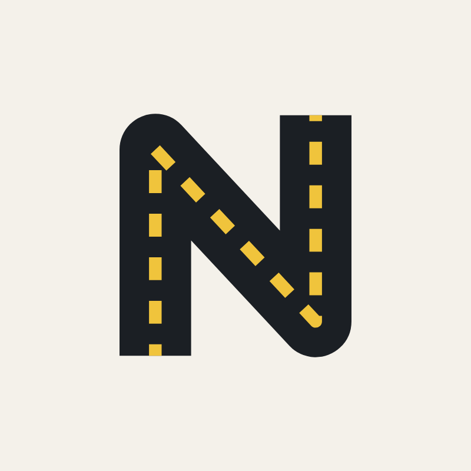

NovaCoach
LinkedIn launch kit
Goodbye Trimble, hello NovaCoach.
A plan for Patrick's last week at Trimble and his first week as NovaCoach: thirteen images in the site's own look, post drafts in Norwegian and English, and the setup for a NovaCoach company page people can follow.
The drafts are starting points built only from facts on novacoach.no. Patrick's own words and memories will beat them, so edit freely. Text in yellow is a placeholder.
Settle these first
Five decisions
Which day is the last day?
The plan assumes Friday 30 October. If it's Thursday, move the farewell post with it; everything after stays relative to that day.
Two posts or one
SuggestedTwo: a thank-you on the last day, then the NovaCoach launch the following Tuesday. Retirement posts draw a lot of attention, so this gives two big moments, and the goodbye doesn't read as a sales pitch. One combined post is simpler and puts NovaCoach in front of the biggest audience straight away. The farewell draft has a one-post ending for that case.
Which language
SuggestedFarewell in English, because the Trimble network is international. Launch in Norwegian, because the buyers are Norwegian road owners, consultants and universities. Every draft and image exists in both.
Tell Trimble first
A short heads-up to his manager before the launch post. NovaCoach teaches Trimble's products, so goodwill and referrals from Trimble are worth a lot. Worth a quick look at the employment agreement for anything on activities after leaving before anything goes public.
Link preview for novacoach.no
When someone shares the site, LinkedIn shows its preview image, which is currently a crop of the portrait. A proper 1200×630 preview is in the gallery below. Using it is a small change to the site and one deploy.
The plan
Seven days, then one post a week
Dates assume the last day is Friday 30 October. Mornings (08–10) tend to work best for a Norwegian professional audience.
Tue 27 – Thu 29 Oct
Get ready, quietly
- Finish the site's launch checklist: novacoach.no pointing at Netlify, the patrick@novacoach.no mailbox in the site footer, and form notifications to Patrick's email.
- Create the NovaCoach company page with the logo, cover, tagline and About text from this kit. Add Martin as a second admin.
- Publish the offer card as the page's first post, so it isn't empty when people arrive.
- Don't announce the page yet, and leave the profile alone while still at Trimble.
Fri 30 Oct · last day at Trimble
The thank-you post
- Farewell post from Patrick's own profile with the farewell image. No link and no pitch.
- Tag up to five people by name. More starts to feel like a mailing list.
- Family and close colleagues: react early and comment with a real memory rather than "congrats". Patrick replies to every comment that day.
Mon 2 Nov
Update the profile
- End the Trimble role and add NovaCoach as the new role, linked to the company page so the NovaCoach logo shows.
- Leave "share with network" switched on for the new role. LinkedIn then asks his contacts to congratulate him, which is free reach.
- New headline and background banner. Add novacoach.no under Featured. Switch on "Providing services" so people can request a course from the profile.
Tue 3 Nov
Launch NovaCoach
- Launch post from Patrick's profile with the launch image. Put novacoach.no in the first comment.
- Reshare it from the NovaCoach page.
- Invite connections to follow the page. LinkedIn gives each page a monthly batch of invite credits, and a credit comes back when someone accepts, so start with the people most likely to accept.
Wed 4 – Fri 6 Nov
Talk to people directly
- Send 20–30 personal messages: former customers, regulars from the user conferences, and lecturers who teach Novapoint. A personal message gets more replies than any post.
- Use the message draft below as a base and make each one personal.
Weeks 2–8
One post a week
- Rotate between the formats under "What to post next". Post from Patrick's profile, then share from the NovaCoach page.
- Spend ten minutes a day commenting on posts from Norwegian road designers, consultancies and Statens vegvesen. That is how his name keeps showing up between posts.
Images
Thirteen images, ready to upload
Feed posts are 4:5 portrait, which takes the most space in the LinkedIn feed. Every image uses the logo, colours and fonts from novacoach.no.





To save an image at full size, right-click it (or long-press on a phone) and choose Save image. Martin also has all thirteen in a zip.
Words
Post drafts and page text
Last day at Trimble, with the farewell image. No link.
Post
Today is my last day at Trimble.
In 1988 I was a young road designer at Statens vegvesen in Drammen, drawing the E18 through Kobbervikdalen by hand. The office had just started using something called NovaCAD, and I threw myself at it.
In 1993 Vianova called. That was the start of more than 30 years building Novapoint: as CEO, as domain lead for Novapoint Road, as chairman when Trimble bought Vianova in 2015, and in recent years as product director for Novapoint, Quadri, Quantm and Geosuite.
What I'm proudest of isn't a feature. It's the user conferences, and the community of road designers who shared best practice, ideas and enthusiasm for the craft there, year after year.
Thank you to my colleagues at Vianova and Trimble, and to the customers who taught me as much as I taught them. [Tag 3–5 people you want to thank]
People keep wishing me a happy retirement. I'll take it. But for me, retirement is about doing what you love, and teaching Novapoint has always been my passion. So I'm not going far. More on that next week.
I dag er min siste dag i Trimble.
I 1988 var jeg ung vegplanlegger hos Statens vegvesen i Drammen og tegnet E18 gjennom Kobbervikdalen for hånd. Kontoret hadde nettopp tatt i bruk noe som het NovaCAD, og jeg kastet meg over det.
I 1993 ringte Vianova. Det ble starten på over 30 år med å bygge Novapoint: som daglig leder, som fagansvarlig for Novapoint Veg, som styreleder da Trimble kjøpte Vianova i 2015, og de siste årene som produktdirektør for Novapoint, Quadri, Quantm og Geosuite.
Det jeg er stoltest av, er ikke en funksjon. Det er brukermøtene, og fellesskapet av vegplanleggere som delte beste praksis, ideer og entusiasme for faget, år etter år.
Takk til alle kolleger i Vianova og Trimble, og til kundene som har lært meg minst like mye som jeg har lært dem. [Tagg 3–5 personer du vil takke]
Mange ønsker meg en god pensjonisttilværelse. Den skal jeg ha. Men for meg handler pensjon om å gjøre det man liker, og å lære bort Novapoint har alltid vært en lidenskap. Så jeg går ikke langt. Mer om det neste uke.
One-post version: swap the last paragraph for this
People keep wishing me a happy retirement. I'll take it. But for me, retirement is about doing what you love, and teaching Novapoint has always been my passion. So from Monday that is all I'll do, as NovaCoach: Novapoint and Quadri training and coaching, on your own project. Link in the first comment.
Mange ønsker meg en god pensjonisttilværelse. Den skal jeg ha. Men for meg handler pensjon om å gjøre det man liker, og å lære bort Novapoint har alltid vært en lidenskap. Så fra mandag er det bare det jeg gjør, som NovaCoach: kurs og coaching i Novapoint og Quadri, på deres eget prosjekt. Lenke i første kommentar.
Tuesday after the last day, with the launch image. Link goes in the first comment.
Post
Ny linjeføring.
I dag starter jeg NovaCoach: kurs og coaching i Novapoint og Quadri, helst på deres eget prosjekt.
Et vanlig grunnkurs bruker et standard datasett. Hovedkurset mitt bruker deres. Dere sender grunnlaget på forhånd, jeg bygger øvingene på det, og etter to dager har teamet en modell av sitt eget prosjekt.
Dette tilbyr jeg:
→ Novapoint Veg på eget prosjekt (2 dager)
→ Novapoint Veg, grunnkurs (2 dager)
→ Quadri for prosjektteam (1 dag)
→ Team-coaching mens prosjektet pågår
→ Novapoint-undervisning for universiteter og høgskoler
Jeg kommer til dere, i hele Europa.
Novapoint har hundrevis av funksjoner. Jeg var med da de ble bygget. Nå kan jeg bruke all tiden på å hjelpe folk å ta dem i bruk.
Kjenner du et vegteam eller et studieprogram som burde høre om dette? Del gjerne. Lenke i første kommentar, og følg gjerne NovaCoach her på LinkedIn.
Changing lanes.
Today I'm launching NovaCoach: Novapoint and Quadri training and coaching, ideally on your own project.
A typical beginner's course uses a demo dataset. My main course uses yours. You send the base data in advance, I build the exercises on it, and after two days the team has a model of its own project.
What I offer:
→ Novapoint Road on your own project (2 days)
→ Novapoint Road, standard course (2 days)
→ Quadri for project teams (1 day)
→ Team coaching while the project is running
→ Novapoint teaching for universities and colleges
I come to you, anywhere in Europe.
Novapoint has hundreds of functions. I was there when they were built. Now I get to spend all my time helping people put them to work.
Know a road design team or a study programme that should hear about this? Please share. Link in the first comment, and do follow NovaCoach here on LinkedIn.
First comment
Les mer og meld interesse på novacoach.no. Jeg svarer innen to virkedager.
More, and a short interest form, at novacoach.no/en/. I reply within two working days.
Fields for creating the page. LinkedIn lets you add the page details in more than one language, so add both.
Settings
- Name
- NovaCoach
- Page URL
- linkedin.com/company/novacoach, if it's free
- Website
- https://novacoach.no
- Industry
- Professional Training and Coaching
- Size and type
- 0–1 employees, privately held
- Location
- Oslo, Norway
- Button
- Visit website, pointing at novacoach.no
- Logo and cover
- Company page logo and cover from the images above
Tagline
Kurs og coaching i Novapoint og Quadri, på deres eget prosjekt.
Novapoint and Quadri training and coaching, on your own project.
About
NovaCoach holder kurs og coaching i Novapoint og Quadri, gjerne på deres eget prosjekt.
Kursene holdes av Patrick Mc Gloin, som har jobbet med Novapoint siden den het NovaCAD. Han var med på å bygge verktøyene gjennom mer enn 30 år i Vianova og Trimble, som daglig leder, fagansvarlig for Novapoint Veg og produktdirektør.
Kurs og pakker:
• Novapoint Veg på eget prosjekt (2 dager, hos dere)
• Novapoint Veg, grunnkurs (2 dager, hos dere)
• Quadri for prosjektteam (1 dag, hos dere)
• Team-coaching på eget prosjekt, digitalt eller hos dere
• Novapoint-kurs for universiteter og høgskoler
For byggherrer og vegeiere, rådgivere og utdanningsinstitusjoner. Vi kommer til dere, i hele Europa.
NovaCoach er en tjeneste levert av PLATANUS AS, org.nr 925 510 483. Novapoint, Quadri og Trimble er varemerker som tilhører Trimble Inc. NovaCoach er uavhengig og ikke tilknyttet Trimble.
NovaCoach offers Novapoint and Quadri training and coaching, ideally on your own project.
Courses are run by Patrick Mc Gloin, who has worked with Novapoint since it was called NovaCAD. He helped build the tools over more than 30 years at Vianova and Trimble, as CEO, domain lead for Novapoint Road and product director.
Courses and packages:
• Novapoint Road on your own project (2 days, on site)
• Novapoint Road, standard course (2 days, on site)
• Quadri for project teams (1 day, on site)
• Team coaching on your own project, online or on site
• Novapoint courses for universities and colleges
For road authorities and public clients, consultancies, and universities. We come to you, anywhere in Europe.
NovaCoach is a service delivered by PLATANUS AS, org. no. 925 510 483. Novapoint, Quadri and Trimble are trademarks of Trimble Inc. NovaCoach is independent and not affiliated with Trimble.
For Monday 2 November, after the last day. Use the language his profile is already in.
Headline
Kurs og coaching i Novapoint og Quadri · NovaCoach · Med Novapoint siden 1988
Novapoint and Quadri training and coaching · NovaCoach · With Novapoint since 1988
New role
- Title
- Grunnlegger og kursholder
- Founder and trainer
- Company
- NovaCoach (pick the page from the list, so the logo shows)
- Start
- [The month after the last day at Trimble]
- Share with network
- On
Role description
Kurs og coaching i Novapoint Veg og Quadri, på deres eget prosjekt og hos dere, i hele Europa. Grunnkurs, kundetilpassede kurs, team-coaching og undervisning for universiteter og høgskoler. novacoach.no
Novapoint Road and Quadri training and coaching, on your own project and at your office, anywhere in Europe. Standard and tailored courses, team coaching, and teaching for universities and colleges. novacoach.no
Launch week, to people who know Patrick. Add one personal line to each, like a project or a user conference you shared.
Message
Hei [navn]! Etter mange år i Vianova og Trimble har jeg startet NovaCoach. Jeg holder kurs og coaching i Novapoint og Quadri, gjerne på teamets eget prosjekt. Hvis dere har folk som skal bli bedre i Novapoint Veg eller Quadri fremover, tar jeg gjerne en prat. Mer på novacoach.no.
Hi [name]! After many years at Vianova and Trimble I've started NovaCoach. I run Novapoint and Quadri training and coaching, ideally on the team's own project. If you have people who need to get better at Novapoint Road or Quadri, I'd be glad to talk. More at novacoach.no/en/.
For lecturers
Hei [navn]! Jeg har startet NovaCoach, og ett av tilbudene er å kjøre Novapoint-undervisningen for studentene deres, på skolens lisenser og labber, med øvinger som er oppdatert for gjeldende versjon. Da kan du bruke tiden på faget. Passer det å ta en prat før neste semester planlegges? novacoach.no/kurs/
Hi [name]! I've started NovaCoach, and one of the things I offer is running the Novapoint teaching for your students, on the institution's licences and labs, with exercises updated for the current version. That leaves you the time for the subject itself. Could we talk before next semester is planned? novacoach.no/en/courses/
After launch week
What to post next
One post a week, rotating. Short, with one picture, from Patrick's profile first.
The tip of the week
One Novapoint or Quadri function most users don't know, with a screenshot. It shows the "hundreds of functions you didn't know were there" promise in practice.
Example: the quickest way to get quantities split by soil type.
From the archive
Stories only Patrick can tell: the E18 through Kobbervikdalen drawn on paper, the first NovaCAD, setting up Vianova's office in Thailand, the user conferences.
An old photo or drawing does better than any graphic.
R110 in plain words
One requirement from R110 Modellgrunnlag explained with a model view. Useful for the road owners and consultants who have to deliver to it.
The cross section and roundabout views from the site work well here.
From a course
Once the first course has run: what the team built on its own project in two days. Ask the customer first, and tag them if they agree.
A before-and-after of their model says more than a testimonial.